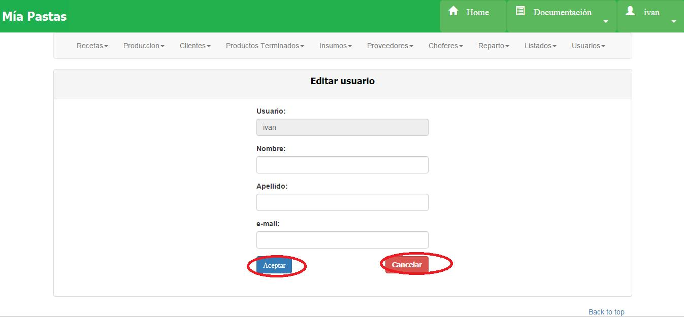

Modificar Usuario =================
Al presionar “Editar” veremos la siguiente pantalla, donde se nos muestra un formulario, y deberemos ingresar el nombre, apellido y email del usuario:
El campo “Usuario” no se puede modificar. Para guardar los cambios se deberá presionar el botón aceptar. El botón “Cancelar” permitirá cancelar los cambios, y te redirigirá a la página principal del usuario.